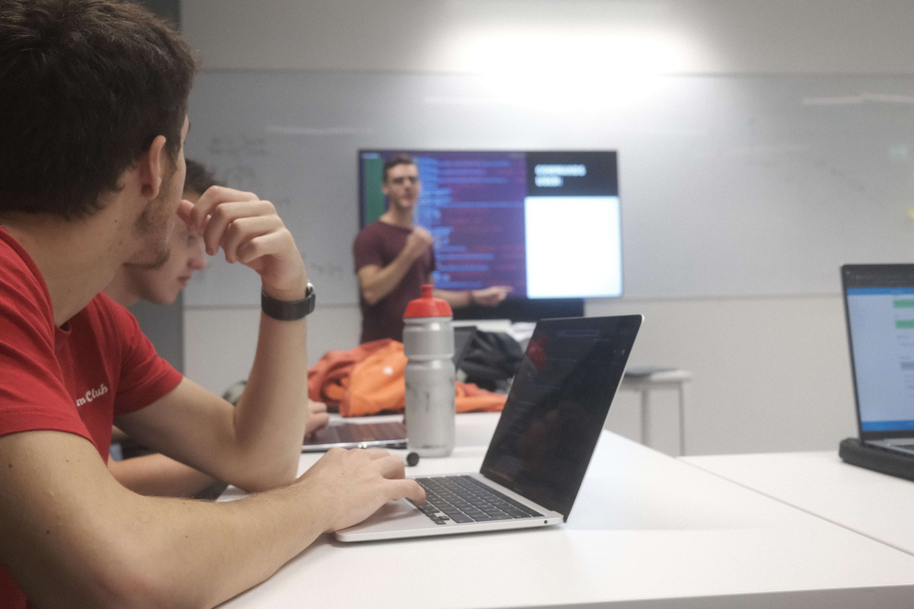

ABOUT US
Lowering the barrier to entry in this ever more difficult field
We are VU StudSec, a (unofficial) CyberSecurity Association within VU Amsterdam dedicated to lowering the barrier to entry in the CyberSecurity field. This mission is carried out by hosting workshops and tutorials regarding various sectors of cybersecurity in combination with constant mentoring from proffesionals in the field.
Our objective is to provide a platform for students to learn and grow in the field of CyberSecurity. We also provide a platform for students to share their knowledge and experience with other students which can be found here.
Our story:
Starting from 2 students working in cybersecurity in september 2021, today
we have over 350 students with a wide range of skill levels, from experienced professionals to eager new students just starting out.
We are holding bi-weekly events and training sessions in order to expand the general community awareness,
as well as technical workshops related to cybersecurity for both offensive and defensive operations.
Our motive for the mentors of this community are to provide the helping hand nobody had years ago, when cybersecurity was still a new field.
Our calendar
Hack N' Chill meetings are not shown, as they are voted within our discord server!
Workshops
Workshops are educational events where students can learn about a specific topic in cybersecurity. They are hosted by our mentors and are open to all members, regardless of their skill level!
HnCs
Hack N' Chill meetings are a casual event where students can come together and work on their own projects, or work on challenges together. They are hosted by our members and are open to all members, and subject to voting within our discord server!
CTFs
CTFs are a type of cybersecurity competition where students can solve challenges in order to gain points. We participate as team VUBar in various CTFs and are open to all members.
Events
Other events are educational or social events that are not workshops, HnCs or CTFs. They are hosted by our mentors and are open to all members, usually focusing on a specific initiative.
WE ARE PART OF
Here are some of the organisations promoting our mission.
WE ARE SUPPORTED BY
Here are some of the organisations helping us carry out our mission.
WHERE WE ARE AT
Feel free to reach us!

Amsterdam, The Netherlands
Email: info@studsec.nl